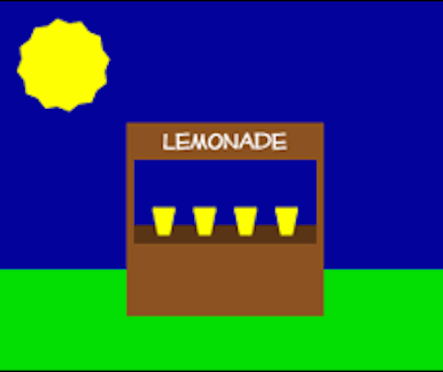

The true cost of new features is one of the toughest things for Product Managers to understand. When you've got a full-time team of salaried developers at your side, it's easy to forget the real monetary costs of writing code. There might be a project budget in terms of developer *time*, but not explicit developer *expense*. Developer salaries are something left to the good people in HR, and certainly not something to think about at a feature level. You might have quarterly revenue goals and a roadmap that you hope will meet those goals. And sometimes it will. But unless you are asking the question of what each feature is likely to cost and what you will get out of it, you are just guessing. We have a word for guessing with money: it’s called gambling. The result? Blown schedules, burned out development teams, and lackluster customer response to the "big release". The good news? It doesn’t have to be like this.
A Better Way
This is where Extremely Honest Programming comes in. EHP is all about net results.
EHP says that before assigning the team a new feature, it is vital to ask and answer hard questions about ROI. Without the right data to make good planning decisions (expected net cost and net gain), you simply are not going to make good decisions. A new feature may sound fantastic to everyone in the room, but "fantastic sounding" is not a synonym for "return will be greater than investment."
What would a successful return look like for this feature? This can be an external measurement like a number of new users or % increase in sales, or an internal goal like faster build and deployment times. You'll probably have to break the feature into smaller tasks in order to figure this out, but that’s fine because it will enable iterative releases along the way and improve your ability to adapt to customer feedback. It's okay if there are some fuzzy numbers. True, it may be hard to map faster release times to specific levels of increased revenue, but it is critical to have a plausible theory of the connection that can be measured after delivery.
What is the likely full cost of the feature? This should include ongoing maintenance and operational costs. If your challenge is too large or requires unique skills not found on your in-house team, it may make sense to bring in consultants to help. While you may struggle to pay attention to real "cost" when your unit of investment is in-house developer days, with a team of consultants the true expense is right there on the invoice. Even if it isn’t your job to worry about them, the monetary costs for your in-house team are just as real: long-term organizational success is achieved by judging *all* new features from this perspective.
When Mom Gives You Lemons...
Stop acting like a kid with a lemonade stand. That kid doesn’t think about development or operational costs either - that kid has a magic pantry full of sugar and lemons and a fantastic idea to mix them with water for 10 cents a glass. That kid doesn’t know whether those lemons cost 5 cents or 25 cents; to that kid the lemons are free and each sale is 10 cents in the jar. Focus: Gross revenue.
With a magic pantry of developers, it’s easy to ignore the cost of features. But the lemons are not free, and developer salaries are real. That kid learns a lesson when Mom stops restocking the pantry and instead provides a ride to the store and a handful of cash. Suddenly there are two sides to the equation: *Costs* and revenue. Focus: Net results.
When the organization begins to struggle or you are allocated a budget for a team of consultants, your focus will change too. Suddenly it matters if the lemons cost too much or the forecast calls for rain. If the next big release (full of fantastic-sounding ideas) doesn’t pay off, you may not get more money to try again. No more money, no more lemons, no more lemonade stand.
Extremely Honest Programming sets a higher bar for putting new features on the schedule: If you aren't doing the math, you are just rolling the dice. By thinking about costs and benefits early, you and your team have a much better chance at understanding the real challenges and goals. Conversely, not thinking up front can work for a while and it can feel like you are riding a rocket. But these rockets eventually run out of fuel, and we have a word for those kind of rockets: We call them bombs. This may look like fun in the movies, but numbers don’t lie and the party eventually ends. Just like another lesson from Mom, honesty really is the best policy.
Originally posted at cognitect.com